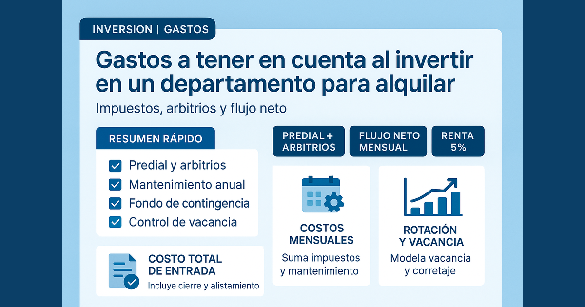

Gastos a tener en cuenta al invertir en un departamento para alquilar

Muchas personas compran un departamento para alquilar con una expectativa de renta atractiva, pero luego descubren que su rentabilidad real era menor. El motivo casi siempre es el mismo: calcular solo ingreso estimado y dejar fuera gastos clave de operación, vacancia y reposición de inquilino.
Esta guía replica la lógica del artículo original de Proper y la amplía para que puedas tomar una decisión con datos: qué gastos considerar antes de comprar, cómo armar una proforma realista y qué indicadores debes monitorear para proteger tu flujo de caja.
Idea central: no evalúes la inversión por la renta publicada, evalúala por flujo neto sostenible después de costos fijos, variables e impuestos.
Resumen rápido
- Método en 3 pasos: hablar con administrador, inversionistas y empresas de servicios.
- Proforma completa: separar gastos fijos, variables y costos de cierre.
- Riesgo operativo: vacancia, corretaje y mantenimiento correctivo son los rubros más subestimados.
- Checklist integral: 17 rubros para validar si el alquiler deja flujo neto positivo.
Tabla de contenidos
- 1. Idea clave: no es solo el precio del departamento
- 2. Método en 3 pasos para estimar gastos antes de comprar
- 3. Cómo armar una proforma para un departamento de alquiler
- 4. Costos de cierre que no debes omitir
- 5. Impuestos y deducciones: conversación obligatoria con contador
- 6. Checklist completo de gastos para alquilar
- 7. Errores que destruyen rentabilidad
- Conclusión y siguientes pasos
1. Idea clave: no es solo el precio del departamento
El valor de compra es solo una parte de la ecuación. En una inversión para alquiler, la rentabilidad depende de cómo se comportan los costos en el tiempo: gastos recurrentes, rotación de inquilinos, incidencias y costos de cierre de la compra.
Si no modelas esos rubros, podrías elegir una propiedad que “parece buena” en papel, pero que luego te exige caja adicional todos los meses. Por eso el análisis debe ser operativo, no solo comercial.
2. Método en 3 pasos para estimar gastos antes de comprar
1) Habla con un administrador de propiedades en tu mercado
Un administrador activo ve costos reales todos los días: incidencias, tiempos de vacancia, costos de reposición y frecuencia de reparaciones. Esa información es más útil que cualquier supuesto optimista.
2) Habla con inversionistas que ya alquilan
Quien ya opera propiedades en alquiler te puede alertar sobre gastos invisibles: costos de rotación, fricciones de cobranza, ajustes entre contratos y desvíos típicos de presupuesto.
3) Consulta rangos de servicios públicos
Aunque parte de esos pagos los asuma el inquilino, conocer los montos promedio ayuda a definir precio de salida, velocidad de colocación y percepción de valor del inmueble en visitas.
3. Cómo armar una proforma para un departamento de alquiler
La proforma es tu herramienta para saber si la operación deja caja positiva. No es un documento decorativo: te sirve para decidir compra, fijar precio y ajustar estrategia cuando cambian las condiciones del mercado.
Paso 1: detalla gastos operativos fijos
Incluye en tu proyección todos los costos que se repiten, incluso si en ciertos contratos parte de ellos cambia de responsable:
- Agua, alcantarillado o gas (según contrato).
- Electricidad en periodos sin ocupación.
- Seguro de propiedad.
- Mantenimiento del edificio/condominio.
- Impuesto predial y arbitrios municipales.
- Cuota hipotecaria (si aplica).
Paso 2: estima gastos variables (los más críticos)
Estos rubros suelen generar la mayor diferencia entre proyección optimista y resultado real:
- Vacancia: días o meses sin renta entre inquilinos.
- Corretaje: comisión de recolocación cuando sale un inquilino.
- Administración: fee por operación y seguimiento mensual.
- Reparaciones: pintura, ajustes, grifería, artefactos y desgaste.
- Capex/mejoras: renovaciones mayores que elevan estándar o corrigen obsolescencia.
Paso 3: valida flujo de caja con enfoque conservador
Con renta estimada y suma total de costos, valida si el flujo mensual sigue siendo positivo en un escenario conservador. Si solo funciona en escenario ideal, tu margen de seguridad es bajo.
Como referencia operativa, usa la misma disciplina del post 2: gastos post-compra para alquilar en Lima.
4. Costos de cierre que no debes omitir
Los costos de cierre son pagos únicos al momento de compra, pero impactan directamente el retorno esperado del activo. Aquí entran gastos notariales, registrales, tasación, costos financieros e intermediación.
El error común es tratarlos como “externos” y no incluirlos en el retorno anual proyectado. Si no entran en la ecuación, la inversión parece más rentable de lo que realmente es.
5. Impuestos y deducciones: conversación obligatoria con contador
El tratamiento tributario cambia el resultado neto de forma material. Dependiendo de tu estructura (persona natural, actividad empresarial, régimen aplicable), pueden variar deducciones y forma de imputar gastos.
- Intereses y gastos financieros (si corresponde).
- Mantenimiento y reparaciones.
- Servicios profesionales (legal, contable, administración).
- Publicidad y costos comerciales de colocación.
- Depreciación y mejoras (según régimen).
Recomendación práctica: antes de cerrar compra, valida el escenario tributario con contador para evitar sorpresas de caja en los primeros meses de operación.
6. Checklist: gastos de un departamento para alquilar (lista completa)
Usa esta lista para revisar tu proforma antes de tomar una decisión:
- Costos de cierre (tasación, notaría, registros, costos de préstamo).
- Honorarios de corretaje/intermediación.
- Marketing y publicación para captar demanda.
- Evaluación del inquilino (crédito, antecedentes, referencias).
- Administración de la propiedad.
- Mantenimiento preventivo y correctivo.
- Control de plagas (si aplica).
- Jardinería/áreas comunes (si aplica).
- Servicios públicos en periodos sin inquilino.
- Vacancia entre contratos.
- Gastos de rotación (limpieza, pintura, ajustes).
- Mejoras o rehabilitación (capex).
- Honorarios legales y contables.
- Impuesto predial y arbitrios.
- Seguro de propiedad.
- Intereses financieros (si hay deuda).
- Fondo de reserva para contingencias.
7. Errores que destruyen rentabilidad
- Comprar con cálculo emocional y sin proforma detallada.
- No estimar vacancia ni costo de recolocación.
- Confundir renta bruta con rentabilidad neta.
- Subestimar mantenimiento correctivo.
- No actualizar presupuesto tras cada rotación de inquilino.
Para mitigar riesgo operativo complementa con criterios para evaluar inquilinos y señales de morosidad.
Preguntas frecuentes
¿Cuál es el error más frecuente al invertir para alquilar?
Calcular con renta bruta sin incluir vacancia, corretaje, mantenimiento e impuestos. Eso sobreestima la rentabilidad y debilita tu flujo mensual.
¿Qué rubros no pueden faltar en la proforma?
Costos de cierre, gastos operativos fijos, gastos variables de rotación, impuestos municipales y fondo de reserva para contingencias.
¿Cuántos escenarios conviene modelar antes de comprar?
Tres: conservador, base y exigente. Te ayuda a decidir con mayor control frente a cambios de mercado o incidencias operativas.
Conclusión
Invertir para alquilar puede ser una estrategia sólida si trabajas con método. La combinación correcta es simple: proforma realista, checklist completo y seguimiento mensual de costos críticos.
Si te interesa seguir afinando tu análisis, revisa también la versión complementaria de gastos de inversión y cómo fijar un precio competitivo.